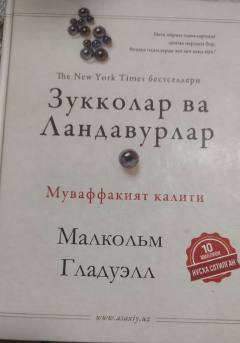

ZVMuvaffaqiyat va iste'dod ortidagi yashirin qonuniyatlarni ochib beruvchi mashhur kitob.
Ushbu kitob muvaffaqiyat va iqtidor ortida yashiringan haqiqatlar, omad hamda muhitning inson hayotiga ta'sirini ilmiy va hayotiy misollar yordamida ochib beradi. Malkolm Gladuell odamlar erishadigan yutuqlarning asl sabablarini o'rganib chiqib, ularni mutlaqo yangi nuqtai nazardan tahlil qiladi.